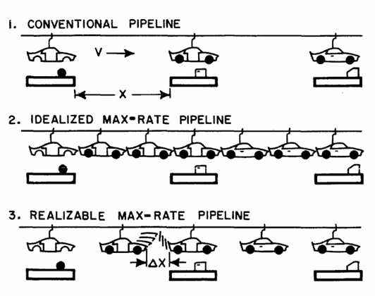
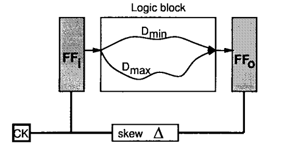
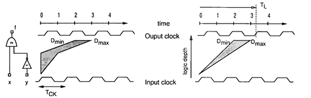
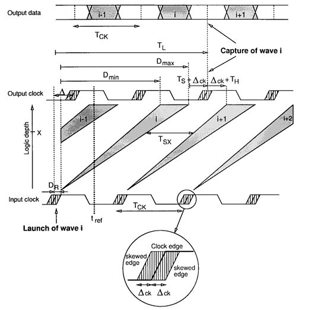

2.5 Wave-Pipelining#
The methods discussed so far, concerned themselves with pipelines, where there is only one token in a combinational logic stage at the same time. The data traveling through the stages was cleanly separated by intermediate sequencing elements, which were clocked with some clock period larger than the maximum propagation delay of the logic.
The idea of wave-pipelined circuit is to get rid of intermediate sequencing elements entirely, hence sending multiple signal ‘waves’ or tokens into the combinational logic at the same time. As will be explained later in this section, one can enforce sequence onto the waves, not by adding additional sequencing elements like before, but just by ensuring certain timing constraints are met. Ideally, this improves both throughput and latency, by eliminating the sequencing overhead that occurs in traditional pipelines.
The idea of wave pipelining was first proposed by Cotton [7], who called this concept a maximum rate pipeline. He compared the main idea to manufacturing assembly lines, a frequently used analogy for pipelines. Figure \ref{fig:AssembLine}, Case 1. shows a conventional pipeline, where there is only one manufacturing piece at each station at the same time. This basically matches the behaviour of the pipelines we have seen so far.
{kind=link}

Figure 2.6: Assembly Line Analogy [7]
One could then also imagine an idealized `maximum rate’ pipeline, as seen in Figure 2.6, Case 2., where manufacturing pieces are sent into the pipeline back to back without any space between them. This represents an optimal pipeline, which would be impossible to realize in practice, due to the differences in delay times at the stations that would lead to collisions. We can, however, find a compromise between the two, by introducing just enough separation \(\Delta X\) between the objects, such that the different delays are accounted for and there occur no collisions. This results in a realizable maximum rate pipeline, as seen in Figure 2.6, Case 3.
For hardware pipelines this concept works quite similar. The basic idea is to find the minimum clock period, so tokens get processed at a maximum speed, while also accounting for the different path delays in the circuit and avoiding collisions. The paper in [8] builds upon the work done by Cotten and describes the generalized approach introduced in this section.
Circuit Model#
To apply the concept of a maximum-rate pipeline to hardware, we first assume the following model of a classical edge-triggered pipeline seen in Figure 2.7, which was also discussed earlier in Section 2.2. First, we define the essential timing parameters of such a circuit, so we can later derive timing constraints and valid clocking intervals for a wave pipelined approach.
{kind=link}

Figure 2.7: Flip-Flop Based Pipeline [8]
We denote \(D_{min}\) and \(D_{max}\) as the minimum and maximum time it takes for a signal to travel through the combinational logic. The parameters \(t_{setup}\), \(t_{hold}\) and \(t_{pcq}\) stand for setup, hold and propagation delay times of the flip-flop registers. Furthermore, we define \(T_{c}\) as the clock-period, \(\Delta\) as the constructive clock skew between registers and \(\Delta_{CK}\) as the worst-case uncontrolled clock skew \footnote{Clock skews describe timing differences in the arrival of clock signals. These can be caused by physical properties of the hardware (uncontrolled) or be deliberately introduced into the clock paths by the designer (controlled)}.
For a visual understanding of multiple signal waves traveling through the logic we introduce delay contours, seen on the left in Figure 2.8. They map the progression of signals through the logic on the vertical axis and the progression of time on the horizontal axis.
{kind=link}

Figure 2.8: Delay Contours and Delay Cones [8]
The left and right border of a delay contour hence represent the signals traveling through the logic with a minimal delay \(D_{min}\) and a maximal delay \(D_{max}\), respectively. The shaded area in between marks the unstable region, where the computation by the combinational logic is still being performed. For simplicity reasons, this can also be portrayed as delay cones, as seen on the right in Figure 2.8.
Timing Constraints#
When dealing with multiple signal waves traveling through the logic at the same time, it is key to ensure that the different waves do not interfere with each other, so no tokens get corrupted. Visualizing a wave-pipelined circuit via delay cones, as seen in Figure \ref{fig:WavePip}, can help provide a better understanding of the way multiple waves progress through the hardware and which constraints need to be made.
{kind=link}

Figure 2.9: Visualization of wave-pipelined circuit [8]
As seen in the Figure 2.9, wave i gets launched at the first rising clock edge. Wave i+1 launches at the beginning of the next cycle, before the previous wave i has not even finished running through the logic. The shaded areas of the output data and the delay cones again mark times where the data is still in an unstable state.
Register Constraints#
A first constraint to ensure correct behaviour would be that the wave gets captured correctly by the output register. This means that the arriving wave should be stable early enough to not violate the setup time of the register and the next wave should arrive late enough to not violate the hold time of the register. This problem is referred to as the register constraints.
We first define the parameter N, which is the number of clock cycles it takes for a wave to travel through the logic and stabilize at the output. This parameter N is also an indicator of the degree of wave-pipelining, as it also denotes how many waves will be in a stage at the same time.
The time \(T_L\) at which a waves gets sampled is now some N clock cycles after being launched from the input register plus the constructive clock skew \(\Delta\) used for adjustments:
The register constraints bound this sampling time \(T_L\) in different ways. First the data needs to be stable, which is the case after \(t_{pcq} + D_{max}\) time has passed. It also needs to be stable early enough to account for the setup time \(t_{setup}\) and the uncontrolled clock skew \(\Delta_{CK}\) at the output register. This provides the following lower bound for the sampling time:
The other register constraint is that the next wave shall not interfere with the sampling of the current wave at the output register. This means that the earliest signal of wave i+1 has to arrive after the hold time \(t_{hold}\) of the output register has already past, expressed as:
Here, the term \(T_{c} + t_{pcq} + D_{min}\) marks the arrival of the first signals of wave i+1 and \(\Delta_{CK}+t_{hold}\) accounts for the worst case uncontrolled clock skew plus the hold time. Combining those two constraints gives us the following condition for the chosen clock period:
This constraint was already derived by Cotten in [7] and shows that the clock period is mainly dependant on the difference between the longest and shortest path of the logic, as it must be ensured that early signals of subsequent waves do not catch up with late signals of the current wave.
Internal Node Constraints#
The constraints above ensure the correct capturing of the data at the bordering registers. However, it is also key to avoid the collision of waves at the individual logic gates. The following constraint is quite similar to the one made above.
For each internal node x the current input wave i must be stable long enough so it can correctly propagate through the logic gate. The earliest possible signals of the next wave i+1 shall not arrive, before the last signals of the current wave have passed through the logic. This constraint is referred to as internal node constraint.
To derive a formal expression for this constraint, we define \(d_{MAX}(x)\) and \(d_{MIN}(x)\) as the longest and shortest propagation delays of node x. We also denote \(T_{SX}\) as the minimum time that node x must be stable to produce a correct output. The resulting constraint is defined as:
This equation can be viewed analogously to Constraint \ref{eq:1}, where (\(d_{MAX}(x) - d_{MIN}(x)\)) is equivalent to \((D_{max} - D_{min})\) and \(T_{SX}\) is equivalent to \(t_{setup} + t_{hold}\).
Valid Clocking#
Intuitively one would assume that any clock period larger than the constraints made by Equation \ref{eq:1} and \ref{eq:2} would satisfy the conditions for a working wave-pipelined circuit. However, work done in [9] and [10] has shown that the region of valid clocking frequencies is not continuous, but made up of finite sets of disjoint valid intervals. If we consider the constraints in \ref{eq:3} and \ref{eq:4}, we can see that \(T_L = NT_{c}+\Delta\) is bounded by two sides:
For simplicity, we write the lower bound as \(T_{MAX}\), denoting the maximum delay through the logic:
and the upper bound as \(T_{MIN}\), representing the minimum delay of the logic:
The resulting simplified equation expresses the valid clocking intervals, which might be disjoint if N > 1.